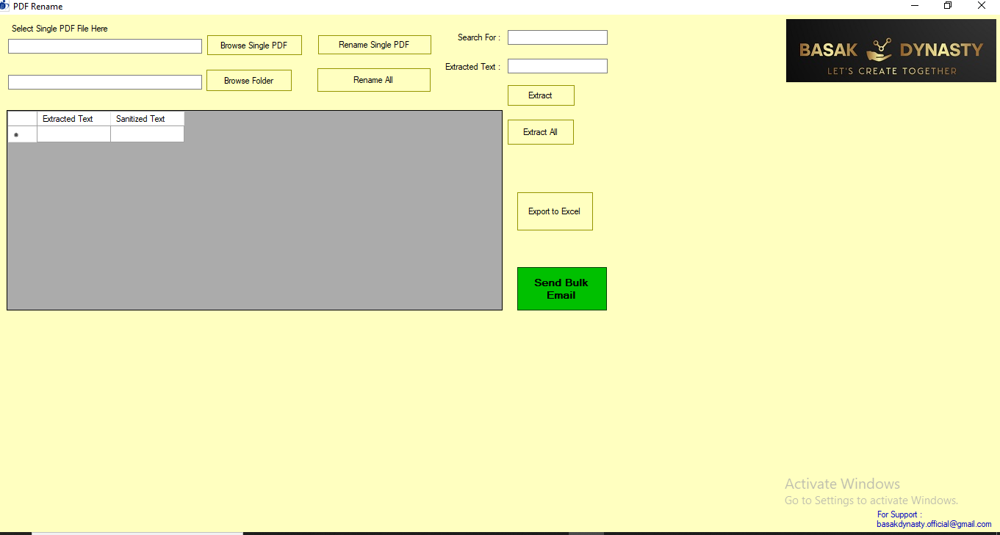

Bulk PDF Rename
A VB.NET desktop tool that allows users to rename large sets of PDF files automatically using Excel/CSV mappings, reducing manual effort and errors.
Features
- Import file name mappings from Excel/CSV
- Batch rename PDFs in selected folder
- Error logs for missing/unmatched files
- User-friendly interface for bulk operations
Screenshots

Technologies Used
VB.NET, Windows Forms, File I/O, Excel Import and Export
Challenges & Learnings
Faced challenges with handling special characters in file names and optimizing performance for large batches of files. Learned about robust error handling and file system operations in VB.NET.